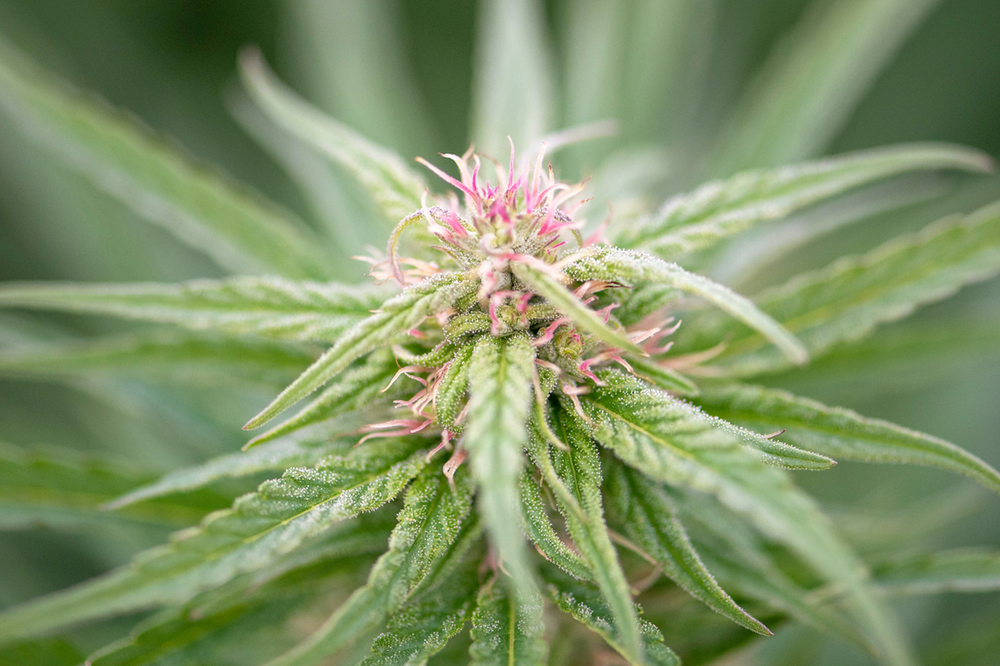
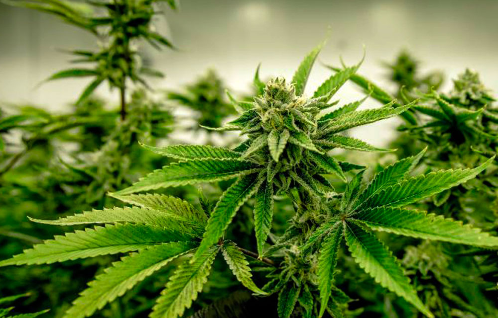
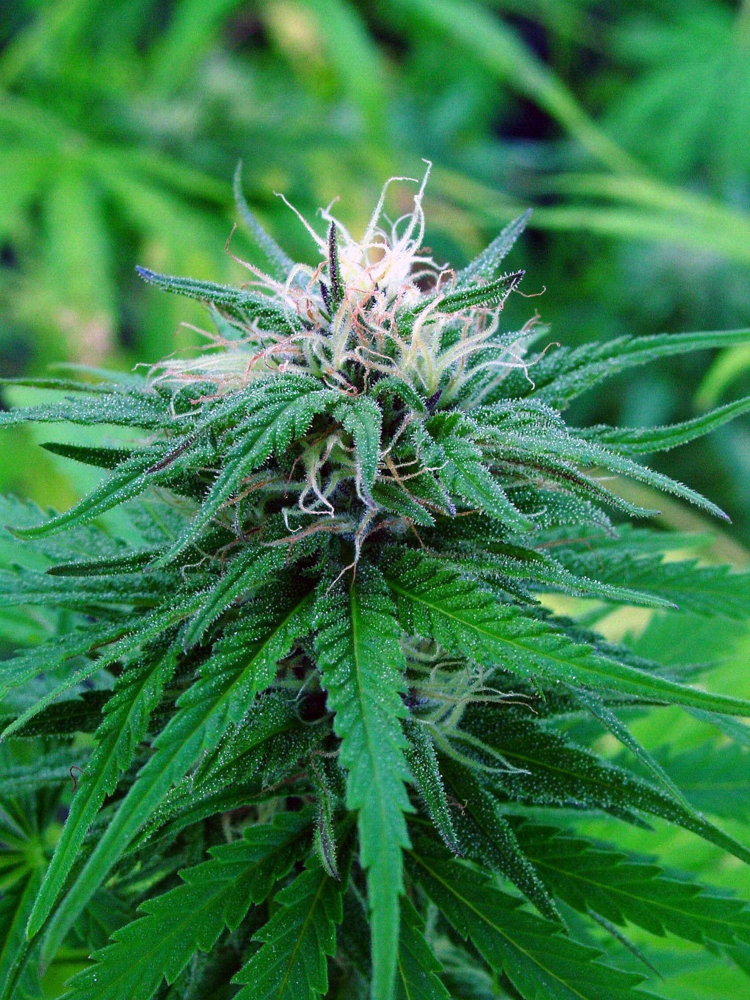

Cannabis Sativa
Efectos del cannabis sativa Los perfiles de cannabinoides de la marihuana sativa son conocidos por provocar efectos mentales estimulantes que ayudan a los usuarios a sentirse concentrados y motivados. La respuesta eufórica producida por los efectos de la marihuana sativa a menudo se describe como "cerebral", y también se dice que fomenta la conversación profunda y mejora la creatividad, por lo que es más adecuada para el uso diurno o las situaciones sociales y para los esfuerzos artísticos. Por tanto, las sativas se caracterizan por producir un efecto eufórico y se suelen usar para pacientes que padecen enfermedades mentales y trastornos del estado de ánimo, como ansiedad, depresión o trastorno por déficit de atención (TDAH). También pueden ser beneficiosas para tratar problemas con el apetito y ayudar a reducir la grasa del cuerpo en trastornos relacionados con la obesidad.
Indica
El Cannabis indica es uno de los dos tipos principales de plantas de cannabis. A diferencia de la sativa, la marihuana indica produce un efecto sedante que es el preferido por los que buscan relajarse o pasar una mejor noche de sueño; y por aquellos que sufren de ansiedad, dolor o espasmos musculares. Al seleccionar una variedad de cannabis, los consumidores no tienen que elegir una indica pura o una sativa pura. Las semillas de marihuana de cepas híbridas pueden ofrecer lo mejor de ambos mundos.La mayoría de las índicas constituyen una rica fuente de los cannabinoides THC, CBD y CBN. Pese a que el Cannabis sativa a menudo produce una cantidad mayor de THC que de otros cannabinoides, el Cannabis indica con frecuencia contiene niveles significativos de los tres tipos. Así, las plantas de variedades índicas tienden a producir efectos más centrados en el cuerpo que las sativas, como puede ser un incremento de las sensaciones físicas, relajación, sequedad bucal o enrojecimiento de los ojos. Estos efectos a menudo se agrupan bajo el término 'colocón', a diferencia del 'subidón' que proporciona la variedad sativa. Ello no significa que las variedades índicas no tengan efectos psicoactivos, sino simplemente que también tienen efectos físicos más notables
Ruderalis
En un reino dominado por las omnipresentes Sativa e Indica, la Ruderalis es la gran desconocida en el mundo de las semillas de marihuana. Aunque no se trata de una especie en sí misma, los efectos de esta variedad junto a cualquiera de sus hermanas mayores pueden llegar a ser sorprendentes dando lugar a verdaderas 'superespecies' capaces de crecer en condiciones en las que otras no llegarían ni a florecer. Aunque la Ruderalis es capaz de crecer en condiciones en las que otras ni siquiera podrían mantenerse con vida, como todo ser vivo tiene su propio talón de Aquiles. Su composición química es mucho menos interesante que la de sus compañeras Sativa e Indica que pueden presumir de respetables niveles de THC y CBD. La discreta presencia de THC en el ADN de esta variedad hace que la Ruderalis pura sea descartada para fines recreativos y terapéuticos. Su consumo no tiene ningún efecto a nivel psicológico o sensorial, por lo que consumirla de forma pura no tiene efectos psicotrópicos. Nada de una tarde de relajación o risas gracias a un poco de Ruderalis sin modificar.